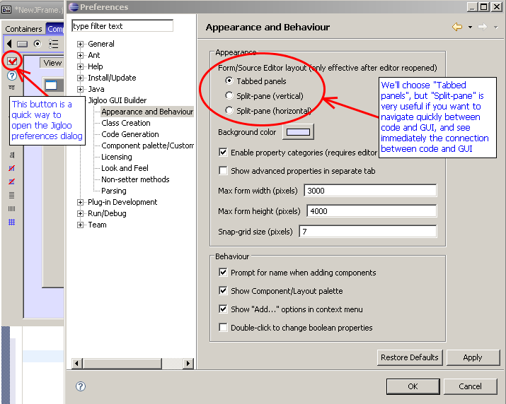
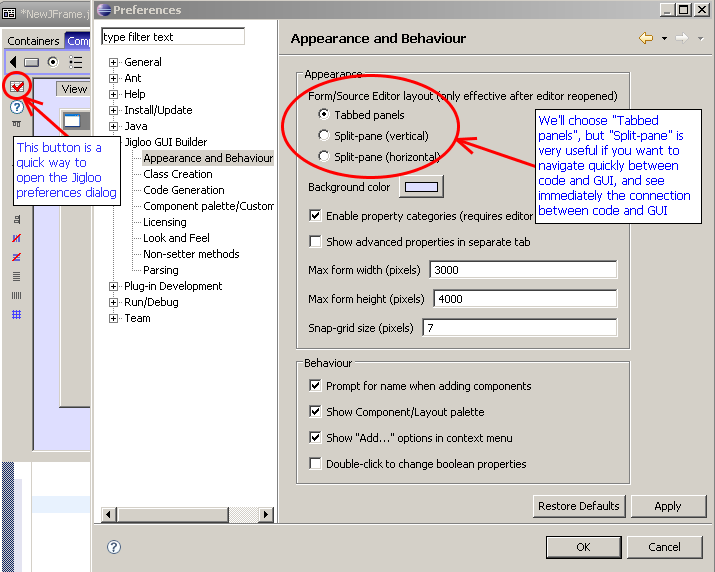

...again, Ctrl+N will show the
"create" dialog, from which you should select "GUI
forms->SWT->Composite"
As well as creating your composite, Jigloo will copy the jar and native libraries into your project. It copies all the native libraries, even though you generally will not need them all, but you never know...
Choose your editor preferencesAs well as creating your composite, Jigloo will copy the jar and native libraries into your project. It copies all the native libraries, even though you generally will not need them all, but you never know...
Now we've got a Jigloo editor
open, let's change how it looks. Click on the "Open Jigloo preferences
editor" button in the toolbar to the left of the Jigloo editor. The
Eclipse preferences window appears with Jigloo selected. Choose
"Appearance and Behaviour" and then "Tabbed panels". This is useful
when you want to maximize your design area, but "Split-pane" can be
useful if you want to see immediately the connection between code and
GUI.

Now hit "OK" and close and re-open the Jigloo editor (you need to do this to change to tabbed panels). If your java class does not immediately re-open in the Jigloo editor, you can ensure that it uses Jigloo's Form Editor by right-clicking on the class and choosing "Open with->Form editor".


Now hit "OK" and close and re-open the Jigloo editor (you need to do this to change to tabbed panels). If your java class does not immediately re-open in the Jigloo editor, you can ensure that it uses Jigloo's Form Editor by right-clicking on the class and choosing "Open with->Form editor".
The composite is created
initially with a FormLayout manager, which allows you to position
elements absolutely and relatively on the form and automatically
resizes them as the form changes shape. However, other layouts are
useful for certain purposes - for example GridLayout is very useful for
situations where your elements are layed out in a grid, with elements
spanning multiple rows or columns. If you wish to set a layout manager
for a composite, select it from the "layout" palette and then click on
the element you wish to apply it to, or right-click on the element and
use the "Set Layout" options.
Let's add a "GO" button to the top right of the form. First click on the "Button" icon in the "Controls" palette and "drop" the button in the top-right corner of the form, using the alignment lines.
Then enter a name and initial text (and an icon image if you like) in the dialog that will appear.
You may need to re-adjust the position of the button after it is added to the form - Jigloo does a better job once it knows exactly how big the button is.
Then add a CCombo control to the top left of the form, call it addressCombo with initial value "www.cloudgarden.com" and stretch it over to meet the "GO" button. You can also drag it's bottom edge to make it the same height as the goButton. Then right-click on the addressCombo and choose "Set/Change style...->BORDER", which will give it a 3D border.
Now click on the alignment button at the top-right of the addressCombo - an "alignment helper" should pop up (see image)
Click on the right anchor button till the anchors look the same as in the image above. Now the addressCombo's top, left and right edges are anchored fixed distances from the top, left and right edges of the form and it will expand horizontally if the form is resized.
Then select the goButton and anchor it as shown in the image below, so that it stays fixed in the top right corner of the form (and does not resize) as the form is resized.
Now close the alignment helper and make the main form bigger because we will add more controls - notice that the addressCombo gets wider.
Now add a "Status" CLabel to the bottom left of the form, an "About" Button called (surprise) aboutButton to the bottom-right of the form, a CLabel called statusLabel stretched along the bottom edge between the other label and the aboutButton, and then add a Browser control in the center of the form.
Anchor all controls so that the browser control expands in both directions and the statusLabel expands horizontally.
You can test whether your form behaves as expected when it is resized by clicking the "Preview" button in the outline view.
Creating the About DialogLet's add a "GO" button to the top right of the form. First click on the "Button" icon in the "Controls" palette and "drop" the button in the top-right corner of the form, using the alignment lines.
Then enter a name and initial text (and an icon image if you like) in the dialog that will appear.
You may need to re-adjust the position of the button after it is added to the form - Jigloo does a better job once it knows exactly how big the button is.
Then add a CCombo control to the top left of the form, call it addressCombo with initial value "www.cloudgarden.com" and stretch it over to meet the "GO" button. You can also drag it's bottom edge to make it the same height as the goButton. Then right-click on the addressCombo and choose "Set/Change style...->BORDER", which will give it a 3D border.
Now click on the alignment button at the top-right of the addressCombo - an "alignment helper" should pop up (see image)
Click on the right anchor button till the anchors look the same as in the image above. Now the addressCombo's top, left and right edges are anchored fixed distances from the top, left and right edges of the form and it will expand horizontally if the form is resized.
Then select the goButton and anchor it as shown in the image below, so that it stays fixed in the top right corner of the form (and does not resize) as the form is resized.
Now close the alignment helper and make the main form bigger because we will add more controls - notice that the addressCombo gets wider.
Now add a "Status" CLabel to the bottom left of the form, an "About" Button called (surprise) aboutButton to the bottom-right of the form, a CLabel called statusLabel stretched along the bottom edge between the other label and the aboutButton, and then add a Browser control in the center of the form.
Anchor all controls so that the browser control expands in both directions and the statusLabel expands horizontally.
You can test whether your form behaves as expected when it is resized by clicking the "Preview" button in the outline view.
Create a new SWT Dialog called
AboutDialog (use CTRL+N to open the "New" dialog)

Again, it will already have FormLayout set as it's layout manager.
Add a Button and CLabel as shown, and anchor them so the label stretches both ways and the button is anchored to the bottom-right.

A bit about propertiesAgain, it will already have FormLayout set as it's layout manager.
Add a Button and CLabel as shown, and anchor them so the label stretches both ways and the button is anchored to the bottom-right.
Now, use the property editor to
set the CLabel's alignment to CENTER

Since we are in the property editor, we should take a moment to look at property "categories" which organise properties into "Basic", "Expert", "Hidden" and any other category you might want to create. For instance, if you scroll down a bit in the property list you'll see the "Expert" category, and a property "backgroundImage". You may want to use this property a lot and so move it to the "Basic" category. You can do this by simply right-clicking on a property name and choosing the category you want from the list (see below).

Since we are in the property editor, we should take a moment to look at property "categories" which organise properties into "Basic", "Expert", "Hidden" and any other category you might want to create. For instance, if you scroll down a bit in the property list you'll see the "Expert" category, and a property "backgroundImage". You may want to use this property a lot and so move it to the "Basic" category. You can do this by simply right-clicking on a property name and choosing the category you want from the list (see below).
Back to the dialog
Now, just to demonstrate the
"Surround by" feature, right-click on the label and choose "Surround by
container...->CTabFolder"

Then add a new CTabItem (from the "Items" palette) to the newly-created CTabFolder, add a CLabel to the CTabItem
Then add a new CTabItem (from the "Items" palette) to the newly-created CTabFolder, add a CLabel to the CTabItem